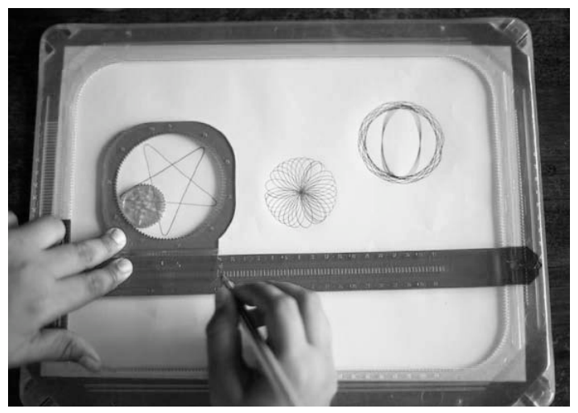
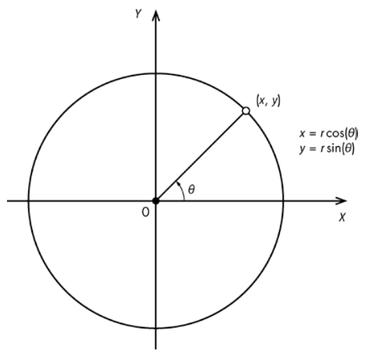
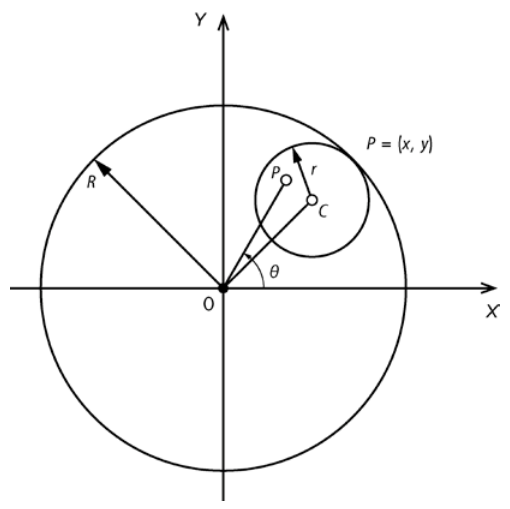
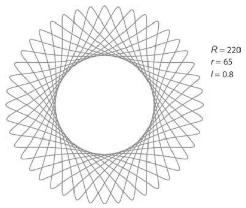
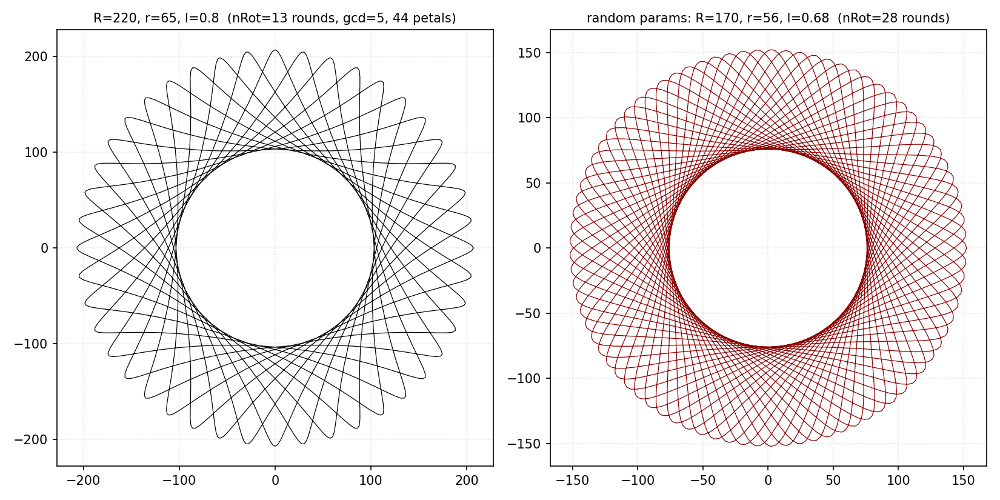
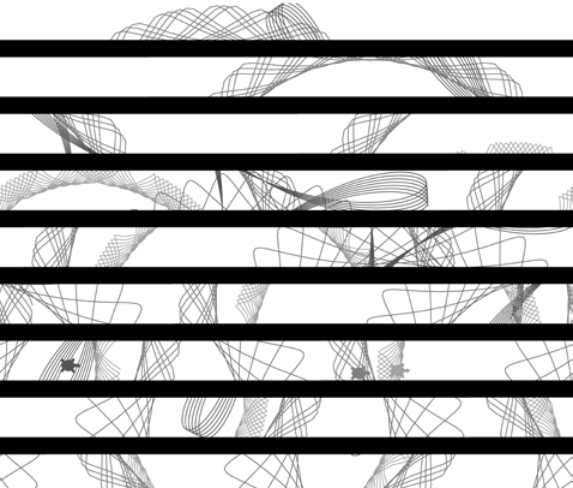
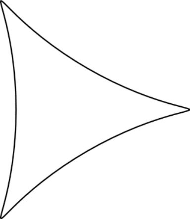

第 2 章 万花尺#
本章解决：如何用参数方程在计算机上复现万花尺玩具画的曲线——建立万花尺的数学模型（半径比 \(k\)、笔位比 \(l\)），用最大公约数判断曲线何时画完，再用 turtle 模块把方程变成一笔一画的动画，最后保存为 PNG 图像。 承上启下：第 1 章 argparse 解析命令行、matplotlib 出图的套路在本章直接沿用（
--sparams选项）；本章首次出现"类 + 定时器"驱动的动画骨架，第 3 章生命游戏会把它升级成 numpy 网格 + matplotlib 动画，第 13 章还会把这里的螺线投影到墙上。
📓 章代码：nb/ch02.ipynb（分节代码；ch01–08 含固定种子实跑输出，ch09–14 为完整实现待硬件环境）
万花尺（Spirograph）是一种绘制数学曲线的玩具：两个不同尺寸的塑料齿轮，一大一小，小齿轮上有几个孔。把钢笔或铅笔放入一个孔，在较大齿轮（内部有齿）内旋转里面的小齿轮，保持笔与外轮接触，就能画出无数复杂而奇妙的对称图案。
本项目用 Python 创建动画，像万花尺一样绘制曲线。spiro.py 程序用参数方程描述万花尺齿轮的运动并绘制曲线（作者称之为螺线），完成的画图可保存为 PNG 图像文件，还能用命令行选项指定参数或生成随机螺线。学完本章能掌握：
- 用 turtle 模块创建图形；
- 使用参数方程；
- 利用数学方程来生成曲线；
- 用线段来画曲线；
- 用定时器来生成图形动画；
- 将图形保存为图像文件。

作者选 turtle 模块纯粹为了有趣——它比较慢，性能关键的场合不适合用它创建图形（你对海龟有何期望？）。想快速画图有更好的方法，后面的项目会探索可选方案。
2.0 本章导图#
2.1 参数方程#
参数方程（Parametric Equation）将曲线上点的坐标表示为一个变量的函数，这个变量称为参数。参数方程让绘制曲线变得容易：只要把参数代入方程，就能产生曲线上的点。
先看半径为 r 的圆，圆心位于二维平面的原点——x、y 坐标满足该方程的所有点构成了圆。圆的参数表示是：
其中角 \(\theta\) 是参数。这些方程得到的任何 \((x, y)\) 值都满足圆的方程 \(X^2 + Y^2 = R^2\)。让 \(\theta\) 从 0 变到 \(2\pi\)，就能算出圆上对应的 x 和 y 坐标。

这两个方程适用于圆心在原点的圆。把圆心平移到点 \((a, b)\)，圆就可以放在 xy 平面的任何位置，更一般的参数方程变成 \(x = a + r\cos\theta\) 和 \(y = b + r\sin\theta\)。
原书笔误：平移圆的方程
原书中文版印作"y = b + r cos(θ)"——两个坐标都写成了 cos，平移后的圆会退化成线段。正确形式是 \(y = b + r\sin\theta\)，本笔记已修正。
拓展：参数方程 vs 显函数
圆没法写成单个 \(y = f(x)\)（一个 x 对应上下两个 y），参数方程绕开了这个限制：一个参数 \(\theta\) 同时驱动 x 和 y。这正是"代参数入方程就能产生曲线"的方便之处——画图程序只需要不断增大 \(\theta\)，逐点连线即可。
2.1.1 万花尺方程#
图 2-3 展示了类似万花尺运动的数学模型。模型没有齿轮——玩具里的齿轮只是为了防止打滑，数学上不必担心打滑。

图中大圆半径为 R，小圆半径为 r，C 是小圆圆心，P 是笔尖。定义两个无量纲参数：
- 半径之比：\(k = \dfrac{r}{R}\)；
- 笔位比：\(l = \dfrac{PC}{r}\)（线段 PC 与小圆半径之比），决定笔尖离小圆圆心有多远。
组合这些变量来表示 P 的运动，得到万花尺的参数方程：
拓展：内旋轮线与外旋轮线
这类曲线称为内旋轮线（Hypotrochoid）和外旋轮线（Epitrochoid）：小圆在大圆内部滚动得到前者，在外部滚动得到后者。本项目是小圆在环内滚动，属于内旋轮线。对照标准形式可以看清两个参数的来历——笔尖到小圆圆心的实际距离 \(PC = l \cdot r\)，小圆圆心绕大圆圆心转动的半径是 \(R - r\)，代入即得书中的方程：
第二项的频率 \((R-r)/r\) 正是代码里的 \((1-k)/k\)。当 \(k = 1/3\) 且笔尖落在小圆边缘（\(l=1\)）时，曲线退化为熟知的三尖内摆线（deltoid），见 2.5 节的图 2.6。
方程看起来有点吓人，但推导并不复杂，想探索数学可参见维基百科的 Spirograph 词条。图 2-4 展示了参数变化时方程产生的曲线——改变 R、r 和 l，可以产生变化无穷的迷人曲线。

周期性：曲线要画多少圈才算完？ 实际绘制时，曲线被画成一系列点之间的线段；点足够接近，图看起来就像平滑曲线。玩过真万花尺就知道，取决于参数，图案可能需要很多转数才能完成。要确定何时停止绘图，就要利用万花尺的周期性（Periodicity）——图案多久开始重复。研究内外圆的半径之比：
分子分母除以它们的最大公约数（GCD，Greatest Common Divisor）——这里 \(\gcd(65, 220) = 5\)——化简该分数：
化简后的分子告诉我们需要多少圈才能完成曲线：13 圈后，曲线将开始重复。分母是小圆围绕其中心旋转的圈数，它提示了曲线的形状——在图 2-4 中数一下，花瓣或叶的数目恰好是 44。
画出螺线的参数 \(\theta\) 范围就是 \([0,\ 2\pi \cdot n_{Rot}]\)，其中 \(n_{Rot} = r/\gcd(r, R)\)（代码里即化简后的分子，见 2.3.2 节）。这个范围告诉我们何时停止绘制特定的螺线；不知道角度的结束范围，就会循环不止，不必要地重复该曲线。
原书笔误：θ 的结束范围
原书印作"参数 θ 范围就是 [0, 2πr]"——照此会画 65 圈（重复 5 遍）。与代码 range(0, 360*self.nRot + 1, ...) 一致的正确范围是 \([0,\ 2\pi \cdot n_{Rot}]\)，即 2π × 化简后的分子 13。本笔记已修正。
拓展：为什么分子就是圈数
方程第一项 \((1-k)R\cos\theta\) 正是小圆圆心的坐标——参数 \(\theta\) 每转 \(2\pi\)，小圆圆心绕大圆圆心公转一圈。第二项的频率是第一项的 \((R-r)/r\) 倍。曲线闭合要求两项同时回到初值：设 \(\theta\) 转 T 圈，需要 \(T \cdot (R-r)/r\) 为整数。取 \(T = r/\gcd(r,R) = 13\)，得 \(13 \times 155/65 = 31\)（整数）；而任何更小的 T 都做不到。所以 13 是最少的圈数，分母 \(R/\gcd = 44\) 对应花瓣数。
2.1.2 海龟画图#
Python 的 turtle 模块可以用来创建图案。这是一个简单的绘图程序，模型是一只海龟拖着尾巴穿过沙滩、留下图案。turtle 模块提供了设置笔（海龟的尾巴）位置和颜色等绘图方法——只要少量绘图函数，就能创建漂亮的螺线。
先用 turtle 画个圆热身。输入以下代码，保存为 drawcircle.py 运行：
# ===== 书 2.1.2 节 drawcircle.py =====
import math
import turtle
# draw the circle using turtle
def drawCircleTurtle(x, y, r):
# move to the start of circle
turtle.up() # 提笔：笔离开"纸"，移动不画线
turtle.setpos(x + r, y) # 移到起点 (x+r, y)——(x, y) 是圆心，起点在圆的最右端
turtle.down() # 落笔：准备画图
# draw the circle
for i in range(0, 365, 5): # 角度 i 以 5 为步长，从 0 到 360
a = math.radians(i) # 度转弧度（计算机角度计算大多需要弧度）
# 参数方程算出圆上的下一个点，海龟从上一位置画线到新位置
turtle.setpos(x + r*math.cos(a), y + r*math.sin(a))
drawCircleTurtle(100, 100, 50) # 圆心 (100, 100)，半径 50
turtle.mainloop() # 保持 tkinter 窗口打开
逐行看：drawCircleTurtle() 先调用 up() 提笔——让笔离开虚拟的纸，移动海龟不会画图，用于先定位；setpos(x + r, y) 把海龟放到圆的第一个点（圆心 \((x, y)\) 正右侧）；down() 落笔。随后 range(0, 365, 5) 让变量 i 以 5 为步长从 0 递增到 360，i 是角度参数，传给圆的参数方程前先经 math.radians() 从度转为弧度。循环体里的 setpos() 利用参数方程计算圆的坐标并移动海龟——从上一个位置画线到新位置。严格说画出来的是 N 边多边形，但步长只有 5 度，N 非常大，多边形看起来就是一个圆。最后 mainloop() 保持 tkinter 窗口打开（Tkinter 是 Python 默认的 GUI 库）。
现在，可以准备画螺线了。
2.2 所需模块#
创建螺线只用两个模块：
- turtle：绘图；
- pillow：Python 图像库（PIL）的一个分支，用于保存螺线图像。
2.3 代码#
程序围绕两个类组织：Spiro 类绘制单条曲线——draw() 一次画完，update() 配合定时器一段一段画；SpiroAnimator 类管理一组 Spiro 对象并产生随机螺线动画。先看 Spiro 的各方法，再组装动画。
2.3.1 Spiro 构造函数#
构造函数负责创建海龟、记录绘图步长并初始化状态：
# ===== 书 2.3.1 节 Spiro 构造函数 =====
# a class that draws a Spirograph
class Spiro:
# constructor
def __init__(self, xc, yc, col, R, r, l):
# create the turtle object
self.t = turtle.Turtle() # 每条螺线一个独立海龟对象，可同时画多条
# set the cursor shape
self.t.shape('turtle') # 光标形状设为海龟（turtle 文档里有其他选项）
# set the step in degrees
self.step = 5 # 绘图角度增量：5 度一步
# set the drawing complete flag
self.drawingComplete = False # 动画用标志：记录绘制是否完成
# set the parameters
self.setparams(xc, yc, col, R, r, l) # 设置万花尺参数
# initialize the drawing
self.restart() # 初始化绘制（定位到曲线起点）
构造函数创建新的 turtle 对象（有助于同时绘制多条螺线），把光标形状设为海龟，将绘图角度增量设为 5 度，并设置一个动画用的完成标志，最后调用设置函数和重启函数。
2.3.2 设置函数#
setparams() 方法初始化 Spiro 对象的数学参数——GCD 与周期计算就在这里：
# ===== 书 2.3.2 节 setparams() =====
# set the parameters
def setparams(self, xc, yc, col, R, r, l):
# the Spirograph parameters
self.xc = xc # 曲线中心的坐标
self.yc = yc
self.R = int(R) # 两圆半径取整——GCD 只能对整数计算
self.r = int(r)
self.l = l # 笔位比 PC/r
self.col = col
# reduce r/R to its smallest form by dividing with the GCD
gcdVal = gcd(self.r, self.R) # 半径的最大公约数
self.nRot = self.r//gcdVal # 化简 r/R 后的分子 = 完成曲线所需圈数
# get ratio of radii
self.k = r/float(R) # 半径比 k = r/R
# set the color
self.t.color(*col)
# store the current angle
self.a = 0 # 当前角度，动画用
方法先保存曲线中心的坐标，将两个半径转换为整数并保存；然后计算半径的 GCD，用它确定曲线的周期性并保存为 self.nRot；self.k 是半径比；最后把当前角度清零（创建动画用）。
Python 3 适配：from fractions import gcd 已不可用
原书在文件头部写 from fractions import gcd。fractions.gcd 自 Python 3.5 起被弃用，3.9 起彻底移除，现在运行会直接 ImportError。改为：
math.gcd 自 3.5 起就有，行为一致。另外 r/float(R) 中的 float() 在 Python 3 里是多余的——/ 本来就是真除法——留着无害，删掉更干净。
2.3.3 restart() 方法#
restart() 重置 Spiro 对象的绘制状态，为重画做好准备：
# ===== 书 2.3.3 节 restart() =====
# restart the drawing
def restart(self):
# set the flag
self.drawingComplete = False # 重置完成标志（多对象动画靠它跟踪各螺线状态）
# show the turtle
self.t.showturtle() # 显示海龟光标，以防它被隐藏
# go to the first point
self.t.up() # 提笔，移动到起点不画线
R, k, l = self.R, self.k, self.l
a = 0.0
# 万花尺方程：计算 a=0 时的起点坐标
x = R*((1-k)*math.cos(a) + l*k*math.cos((1-k)*a/k))
y = R*((1-k)*math.sin(a) - l*k*math.sin((1-k)*a/k))
self.t.setpos(self.xc + x, self.yc + y) # 移到起点
self.t.down() # 落笔——随后的 setpos 调用将画出真正的线
布尔标志 drawingComplete 用来确定绘图是否完成；绘制多个 Spiro 对象时，它负责跟踪某条特定螺线是否画完。提笔后移动到方程在 \(a = 0\) 时的起点，最后落笔。
2.3.4 draw() 方法#
draw() 用连续的线段一次画完整条曲线——万花尺方程的完整计算循环：
# ===== 书 2.3.4 节 draw()：万花尺方程的核心循环 =====
# draw the whole thing
def draw(self):
# draw the rest of the points
R, k, l = self.R, self.k, self.l
for i in range(0, 360*self.nRot + 1, self.step):
# i 是角度（度），从 0 走到 360×nRot——2.1.1 节的周期范围
a = math.radians(i) # 度转弧度
# 万花尺参数方程
x = R*((1-k)*math.cos(a) + l*k*math.cos((1-k)*a/k))
y = R*((1-k)*math.sin(a) - l*k*math.sin((1-k)*a/k))
self.t.setpos(self.xc + x, self.yc + y) # 海龟画线到新点
# drawing is now done so hide the turtle cursor
self.t.hideturtle() # 画完隐藏光标（注意在循环外）
循环遍历参数 i 的完整范围（以度表示，是 360 乘以 nRot），对每个值计算 (x, y) 坐标并移动海龟画线；+1 保证端点 \(360 \cdot n_{Rot}\) 本身也被包含。画完后隐藏光标，留下干净的作品。
排版勘误：hideturtle 的缩进
原书 PDF 的完整代码清单（2.4 节）把 self.t.hideturtle() 排进了 for 循环内。功能上重复隐藏无害，但语义错误——隐藏应发生在整条曲线画完之后（循环外）。英文原书源码（GitHub electronut/pp 仓库 spiro.py）也是如此，本笔记已修正。

左图的圈数与花瓣数和 2.1.1 节的推理完全对上：\(\gcd(65, 220) = 5\)，\(13/44\)，数一数正好 44 瓣。右图同样由 genRandomParams 的取值范围随机生成——换一组参数就是一条全新曲线。
2.3.5 创建动画：update()#
update() 是动画版画图：每被调用一次，曲线前进一小步。
# ===== 书 2.3.5 节 update()：单步绘制 =====
# update by one step
def update(self):
# skip the rest of the steps if done
if self.drawingComplete: # 已画完，跳过后续步骤
return
# increment the angle
self.a += self.step # 当前角度前进一步（5 度）
# draw a step
R, k, l = self.R, self.k, self.l
# set the angle
a = math.radians(self.a)
# 万花尺方程：算出当前角度对应的点
x = self.R*((1-k)*math.cos(a) + l*k*math.cos((1-k)*a/k))
y = self.R*((1-k)*math.sin(a) - l*k*math.sin((1-k)*a/k))
self.t.setpos(self.xc + x, self.yc + y) # 画一小段线
# if drawing is complete, set the flag
if self.a >= 360*self.nRot: # 达到这条曲线的完整角度范围
self.drawingComplete = True
# drawing is now done so hide the turtle cursor
self.t.hideturtle() # 隐藏海龟光标，欣赏成果
update() 先检查 drawingComplete 标志，未设置才继续；然后把当前角度增加一步，计算该角度的 (x, y) 位置并移动海龟——过程中画出一段线。最后检查角度是否达到这条曲线的完整范围 \(360 \cdot n_{Rot}\) 度：达到就设置完成标志并隐藏光标。
2.3.6 SpiroAnimator 类#
SpiroAnimator 类同时绘制多条随机螺线。它用一个定时器，每次调用让每条曲线前进一段——这种技术定期更新图像，并允许程序处理按键、鼠标点击等事件。定时器方案要求把绘制代码改成"单步"形式，这正是 update() 存在的意义。
# ===== 书 2.3.6 节 SpiroAnimator 构造函数 =====
# a class for animating Spirographs
class SpiroAnimator:
# constructor
def __init__(self, N):
# set the timer value in milliseconds
self.deltaT = 10 # 定时器间隔：10 毫秒
# get the window dimensions
self.width = turtle.window_width() # 保存海龟窗口尺寸
self.height = turtle.window_height()
# create the Spiro objects
self.spiros = [] # Spiro 对象列表
for i in range(N):
# generate random parameters
rparams = self.genRandomParams() # 生成随机参数（元组）
# set the spiro parameters
spiro = Spiro(*rparams) # * 把元组展开成参数列表
self.spiros.append(spiro)
# call timer
turtle.ontimer(self.update, self.deltaT) # 挂定时器驱动动画
构造函数把定时器间隔 deltaT 设为 10 毫秒，保存窗口尺寸，然后循环 N 次：genRandomParams() 生成随机参数元组，Spiro(*rparams) 创建对象——构造函数需要的是参数列表，Python 的 * 运算符把元组展开成参数——最后 turtle.ontimer(self.update, self.deltaT) 让 update() 每隔 deltaT 毫秒被调用一次。
2.3.7 genRandomParams() 方法#
每个 Spiro 对象创建时，由 genRandomParams() 生成随机参数，产生形态各异的曲线：
# ===== 书 2.3.7 节 genRandomParams() =====
# generate random parameters
def genRandomParams(self):
width, height = self.width, self.height
R = random.randint(50, min(width, height)//2) # 大圆半径：50 到窗口短边的一半
r = random.randint(10, 9*R//10) # 小圆半径：R 的 10% 到 90%
l = random.uniform(0.1, 0.9) # 笔位比：0.1 到 0.9 的随机小数
xc = random.randint(-width//2, width//2) # 曲线中心落在窗口边界内
yc = random.randint(-height//2, height//2)
col = (random.random(), # 随机红绿蓝分量
random.random(),
random.random())
return (xc, yc, col, R, r, l) # 所有参数打包成元组返回
随机数来自 random 模块的两个方法：randint() 返回指定范围内的随机整数，uniform() 对浮点数做同样的事。R 取 50 到窗口短边一半之间的随机整数；r 取 R 的 10% 到 90%——保证小圆始终比大圆小；l 取 0.1 到 0.9；曲线中心在屏幕边界内随机选点；颜色是随机的 RGB 三元组。
2.3.8 重新启动程序#
SpiroAnimator 自己的 restart() 负责整组螺线的重来：
# ===== 书 2.3.8 节 SpiroAnimator.restart() =====
# restart spiro drawing
def restart(self):
for spiro in self.spiros:
spiro.clear() # 清除以前画的螺线
rparams = self.genRandomParams() # 生成新的随机参数
spiro.setparams(*rparams) # 重新设置参数
spiro.restart() # 重新开始绘制
它遍历所有 Spiro 对象，清除旧画、分配新参数、重新开始。
2.3.9 update() 方法#
SpiroAnimator 的 update() 由定时器调用，以动画形式推进所有 Spiro 对象：
# ===== 书 2.3.9 节 SpiroAnimator.update() =====
def update(self):
# update all spiros
nComplete = 0 # 记录已画完的螺线数
for spiro in self.spiros:
spiro.update() # 每条螺线前进一步
if spiro.drawingComplete: # 数出画完的
nComplete += 1
# restart if all spiros are complete
if nComplete == len(self.spiros): # 全部画完 → 重新开始新一轮动画
self.restart()
# call the timer
turtle.ontimer(self.update, self.deltaT) # 再挂定时器：10 ms 后下一帧
计数器 nComplete 记录已画完的 Spiro 对象数目：遍历列表逐个 update，完成的计数加一；循环外检查计数，全部画完就调用 restart() 开始新动画；最后再次挂上定时器，deltaT 毫秒后再次调用 update()——定时器就是这样一环扣一环地驱动整个动画的。
2.3.10 显示或隐藏光标#
toggleTurtles() 打开或关闭海龟光标——隐藏光标能让绘图更快：
# ===== 书 2.3.10 节 toggleTurtles() =====
# toggle turtle cursor on and off
def toggleTurtles(self):
for spiro in self.spiros:
if spiro.t.isvisible():
spiro.t.hideturtle() # 可见则隐藏
else:
spiro.t.showturtle() # 隐藏则显示
2.3.11 保存曲线#
saveDrawing() 把画好的图保存为 PNG 文件：
# ===== 书 2.3.11 节 saveDrawing()（关键步骤）=====
# save drawings as PNG files
def saveDrawing():
# hide the turtle cursor
turtle.hideturtle() # 隐藏海龟光标，不让它出现在成品图里
# generate unique filenames
dateStr = (datetime.now()).strftime("%d%b%Y-%H%M%S") # 日-月-年-时-分-秒
fileName = 'spiro-' + dateStr # 时间戳保证文件名唯一
print('saving drawing to %s.eps/png' % fileName)
# get the tkinter canvas
canvas = turtle.getcanvas() # 拿到 tkinter 画布对象
# save the drawing as a postscript image
canvas.postscript(file=fileName + '.eps') # 画布导出为 EPS 矢量图
# use the Pillow module to convert the postscript image file to PNG
img = Image.open(fileName + '.eps') # Pillow 打开 EPS
img.save(fileName + '.png', 'png') # 转存为 PNG
# show the turtle cursor
turtle.showturtle() # 恢复显示海龟光标
turtle 程序的 UI 窗口由 tkinter 创建。保存走"矢量 → 位图"两步：先通过 tkinter 的 canvas 对象把窗口内容存为嵌入式 PostScript（EPS）格式——EPS 是矢量格式，可以高分辨率打印；PNG 用途更广，所以再用 Pillow 打开 EPS、转存 PNG。文件名用当前时间日期（datetime.now() 配合格式化字符串）生成，保证唯一。
拓展：Pillow 转 EPS 需要系统里有 Ghostscript
Pillow 自己不解析 PostScript——Image.open('xxx.eps') 实际调用系统的 Ghostscript（gs）做栅格化。若运行时报错找不到 gs，安装 Ghostscript 并加入 PATH 即可；只留 EPS 文件也能用其他工具转换。
2.3.12 解析命令行参数和初始化#
main() 函数用 argparse 解析命令行选项（与第 1 章同款套路）。--sparams 接收三个值（R、r、l），可选：
# ===== 书 2.3.12 节 argparse 与 turtle 初始化（精简）=====
parser = argparse.ArgumentParser(description=descStr)
# add expected arguments
parser.add_argument('--sparams', nargs=3, dest='sparams', required=False,
help="The three arguments in sparams: R, r, l.")
# parse args
args = parser.parse_args()
# set the width of the drawing window to 80 percent of the screen width
turtle.setup(width=0.8) # 绘图窗口宽 = 屏幕宽的 80%（setup 也可指定高度和起点原点）
turtle.shape('turtle') # 光标形状：海龟
turtle.title("Spirographs!") # 窗口标题
turtle.onkey(saveDrawing, "s") # 按 S 键保存图画
turtle.listen() # 开始监听用户事件
turtle.hideturtle() # 隐藏主海龟光标
之后的分支决定程序跑哪种模式：
# ===== 书 2.3.12 节 两种运行模式 =====
# check for any arguments sent to --sparams and draw the Spirograph
if args.sparams: # 给了 --sparams：画一条指定参数的螺线
params = [float(x) for x in args.sparams] # 列表解析：字符串 → 浮点数
col = (0.0, 0.0, 0.0) # 黑色
spiro = Spiro(0, 0, col, *params) # * 把列表展开成参数
spiro.draw() # 一次画完
else: # 无参数：4 条随机螺线的动画模式
spiroAnim = SpiroAnimator(4)
turtle.onkey(spiroAnim.toggleTurtles, "t") # T 键切换海龟光标
turtle.onkey(spiroAnim.restart, "space") # 空格键重启动画
# start the turtle main loop
turtle.mainloop() # tkinter 窗口保持打开、监听事件
if args.sparams 检查命令行是否给了参数：有则用列表解析把字符串转成浮点数（列表解析是一种紧凑创建列表的 Python 结构，例如 a = [2*x for x in range(1, 5)] 创建前 4 个偶数的列表），用 * 展开传给 Spiro 构造函数并调用 draw() 一次画完。没有参数就进入随机模式：创建 SpiroAnimator(4) 画 4 幅图，注册 T 键切换光标、空格键重启动画。最后 mainloop() 让 tkinter 窗口保持打开、监听事件。
2.4 完整代码#
完整程序 spiro.py 的组装顺序：import（sys、random、argparse、numpy、math、turtle、PIL.Image、datetime、gcd）→ Spiro 类 → SpiroAnimator 类 → saveDrawing() → main() → if __name__ == '__main__': main()。各部分本笔记 2.3.1–2.3.12 节已逐一给出，完整清单见原书 2.4 节，或从 GitHub 仓库 electronut/pp 的 spirograph/spiro.py 下载。
2.5 运行万花尺动画#
现在该运行程序了。
默认情况下，spiro.py 绘制随机螺线（图 2.5），按 S 键保存绘制。

再次运行，这次传入参数，画出特定的螺线：

代码根据用户指定的参数画出一条确定形状的螺线；图 2.5 与它不同，展示的是几条随机螺线的动画。
拓展：300 100 0.9 为什么是三尖瓣
代入 2.1.1 节的周期公式：\(r/R = 100/300 = 1/3\)，\(\gcd(100, 300) = 100\)，所以 \(n_{Rot} = 100/100 = 1\)——转一圈就画完；花瓣数 \(= 300/100 = 3\)。\(k = 1/3\) 正是三尖内摆线（deltoid）的特征半径比，笔位比 \(l = 0.9\) 接近 1（笔尖贴近小圆边缘），于是得到图 2.6 中那三条内凹的弧。
2.6 小结#
本章学习了如何创建万花尺那样的曲线：用参数方程描述齿轮运动，用 GCD 定出曲线的周期（何时画完），用 turtle 模块逐点连线成图，用定时器制造动画，用 tkinter 画布加 Pillow 把画保存为 PNG。调整输入参数 R、r、l 就能生成变化无穷的曲线。第 13 章会学到一个惊喜——把螺线投影到墙上。
2.7 实验#
三个进一步尝试的方向：
- 对数螺线：已经会画圆了，写一个程序绘制随机的对数螺线——找到对数螺线的参数方程（如 \(r = a e^{b\theta}\)），然后套用本章的画法。
- 海龟朝向：画曲线时海龟光标总是朝右，这不是海龟移动的方式！每步计算连续点之间的方向矢量，用
turtle.setheading()让海龟朝向绘制方向。 - 科赫雪花：用海龟绘制 Koch snowflake——利用递归（调用自身的函数）的分形曲线。按
def kochSF(x1, y1, x2, y2, t):的形式组织递归函数调用，段长大于 10 时递归生成子段。
坑与陷阱#
7 个容易踩的坑
- from fractions import gcd 已失效：Python 3.5 起弃用、3.9 起移除，直接 ImportError。改
from math import gcd（见 2.3.2 节）。 - turtle 离不开图形界面：无头服务器 / SSH 远程终端运行会抛
_tkinter.TclError: no display name。纯数学部分（参数方程、坐标计算）可以像本笔记一样用 matplotlib(Agg) 复现，动画部分必须本机跑。 - 周期范围写错就循环不止：把画完的范围写成 \(360 \times r\) 度会把 13 圈的曲线画成 65 圈（重复 5 遍）。范围是 \(360 \times n_{Rot}\)，\(n_{Rot} = r/\gcd(r, R)\)。
- gcd 只吃整数：
--sparams传入的三个字符串经float()转换后是浮点数，直接gcd(float, float)会 TypeError。setparams() 里的int(R)、int(r)不是可有可无的整洁措施，是必需品。 - 元组传参忘写 *：
Spiro(rparams)会把整个元组塞进第一个参数 xc，直接 TypeError。Spiro(*rparams)中的*是把元组展开成参数列表。 - EPS 转 PNG 依赖 Ghostscript：Pillow 打开 .eps 实际调用系统的 Ghostscript；没装会报错。装 Ghostscript 或改用其他转换工具。
- 按键没反应先看焦点：
onkey()注册后必须turtle.listen()，且 turtle 窗口获得焦点（点一下窗口）按键才生效——S 保存、T 切换光标、空格重启。
速览#
- 参数方程把曲线坐标表示为一个参数的函数：圆是 \(x = r\cos\theta\)、\(y = r\sin\theta\)；平移圆心加 a、b。
- 万花尺方程（内旋轮线）：\(k = r/R\)，\(l = PC/r\)，笔尖坐标由 \(R[(1-k)\cos\theta + lk\cos((1-k)\theta/k)]\) 给出（y 式用 sin 且第二项带负号）。
- 周期性：\(r/R\) 除以 GCD 化简，分子 = 完成曲线所需圈数（65/220 → 13/44，13 圈），分母 = 花瓣数（44）。
- 参数 \(\theta\) 的绘制范围 \([0, 2\pi \cdot n_{Rot}]\)；不知道结束范围会循环不止地重复曲线。
- turtle 画圆三板斧：up() 提笔定位、down() 落笔、循环 setpos()——小角度的 N 边多边形看起来就是圆。
- Spiro 类四件套：setparams（GCD、nRot、k）、restart（回起点）、draw（一次画完，循环 360×nRot 度）、update（单步动画）。
- SpiroAnimator：deltaT=10 ms 的 ontimer 定时器驱动所有 Spiro 的 update；genRandomParams 生成随机参数（R: 50~短边一半，r: 10%~90%×R，l: 0.1~0.9）；全部画完自动 restart。
- saveDrawing：隐藏光标 → 时间戳文件名 → tkinter canvas 导出 EPS（矢量）→ Pillow 转存 PNG。
- 运行模式：无参数 = 4 条随机螺线动画（T 切光标、空格重启）；
--sparams R r l= 画一条指定螺线，如--sparams 300 100 0.9得三尖瓣曲线（⅓ → 1 圈 3 瓣）。 - Python 3 适配一处：
from fractions import gcd→from math import gcd。
术语速查#
| 英文 | 中文 | 一句话 |
|---|---|---|
| parametric equation | 参数方程 | 曲线坐标 = 一个参数（如 θ）的函数，代参数即得曲线上的点 |
| Spirograph | 万花尺 | 大小两齿轮的绘图玩具，笔放小齿轮孔内滚动画对称图案 |
| hypotrochoid | 内旋轮线 | 小圆在大圆内滚动、笔尖画出（可不在边缘）的曲线，本章主角 |
| epitrochoid | 外旋轮线 | 小圆在大圆外滚动得到的对应曲线 |
| deltoid | 三尖内摆线 | k=⅓ 且 l=1 的特例，图 2.6 的三尖瓣形 |
| radius ratio k = r/R | 半径比 | 万花尺方程第一参数；化简后的分数定周期与瓣数 |
| l = PC/r | 笔位比 | 笔尖到小圆圆心的距离与小圆半径之比，决定曲线"胖瘦" |
| GCD (greatest common divisor) | 最大公约数 | 化简 r/R 用；math.gcd（原书 fractions.gcd 已移除） |
| periodicity | 周期性 | 图案多久开始重复；决定 θ 的绘制范围 |
| nRot | 圈数 | r/gcd(r,R)，化简后的分子 = 画完曲线所需圈数 |
| turtle | 海龟绘图模块 | "海龟拖尾巴穿过沙滩"模型的简单绘图程序 |
| Tkinter | —— | Python 默认 GUI 库，turtle 窗口和 mainloop 的底层 |
| up() / down() | 提笔 / 落笔 | 提笔移动不画线，落笔后 setpos 才画线 |
| setpos() | 设置位置 | 海龟从上一位置画线到新位置——"用线段画曲线"的基本操作 |
| setheading() | 设置朝向 | 实验题用：让海龟朝向绘制方向 |
| ontimer() | 定时器回调 | 每隔 deltaT 毫秒调用一次函数，动画的心跳 |
| mainloop() | 主循环 | 保持 tkinter 窗口打开并监听事件 |
| canvas | 画布 | tkinter 的绘图对象；postscript() 方法导出 EPS |
| EPS (Encapsulated PostScript) | 嵌入式 PostScript | 矢量图格式，保存绘图的第一站 |
| Pillow (PIL) | —— | Python 图像库分支；把 EPS 转成 PNG（依赖系统 Ghostscript） |
| argparse | 命令行解析 | --sparams R r l 三参数选项，给了画指定螺线，不给进随机动画 |
| list comprehension | 列表解析 | [float(x) for x in args.sparams]，紧凑地创建列表 |
* 解包 |
参数展开 | 把元组/列表展开成位置参数，如 Spiro(*rparams) |
| drawingComplete | 完成标志 | Spiro 的布尔状态，动画据此跳过已完成对象、统计重启时机 |